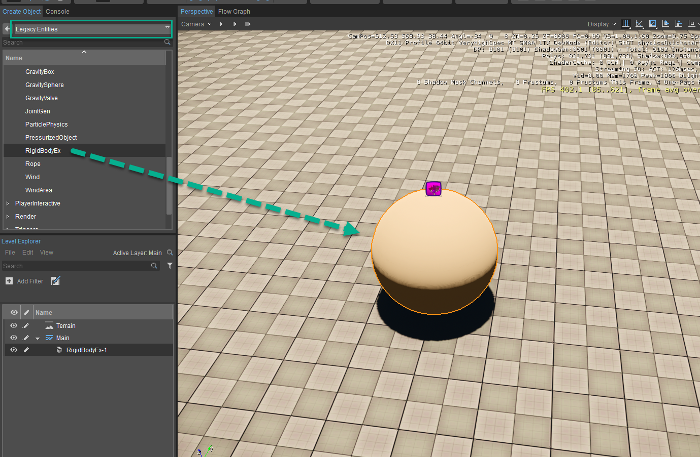
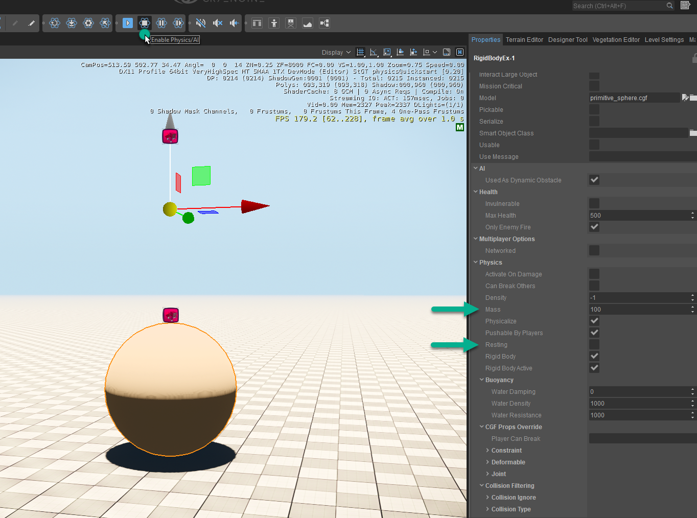
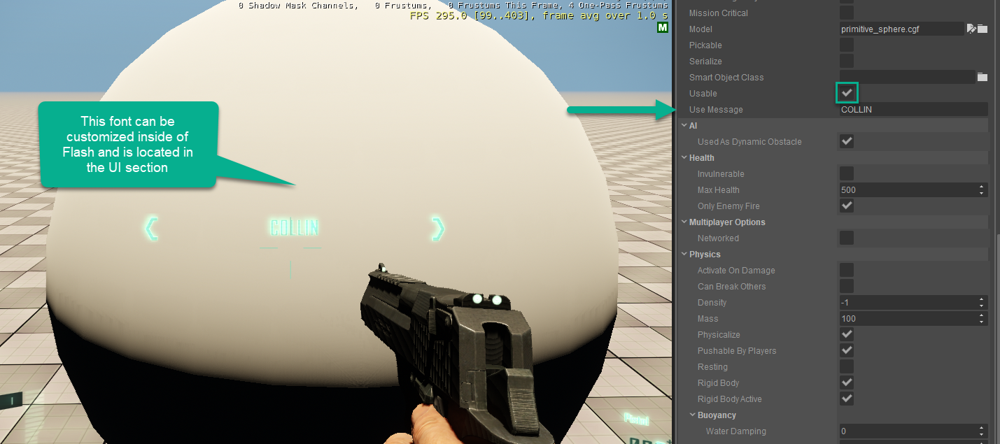

Введение в физику
Известно, что CRYENGINE имеет очень универсальную физическую реализацию, которая охватывает широкий спектр персонажей, объектов и интерактивных транспортных средств для динамичного игрового процесса. Имейте в виду, что большая часть расширенных функций будет размещена в предоставленном образце GameSDK, который позволит вам увидеть весь пример игрового кода, предоставляющий функциональность дизайнерам через преимущественно файлы XML.
В этом кратком руководстве мы рассмотрим, как мы можем взаимодействовать с несколькими предоставленными физическими объектами, и рассмотрим настройку глобальных настроек, которые могут навсегда изменить скорость и взаимодействие в вашей игре. Для начала мы начнем с создания базовой сущности RigidBodyEx, а затем рассмотрим основные параметры, которые необходимо знать всем пользователям, чтобы быстро правильно взаимодействовать с сущностью.
Здесь определены некоторые из наиболее важных параметров:
- Модель - Определяет модель, которая будет использоваться.
- Масса - Вес объекта (плотность объекта, умноженная на его объем). Это можно рассчитать как Масса = (Плотность * Объем).
- Плотность воды - Это можно использовать для override плотности воды по умолчанию (1000). Более низкие значения предполагают, что тело плавает в воде, плотность которой меньше, чем на самом деле, и, следовательно, оно будет легче тонуть.
Важно обратить внимание на значения массы и плотности RigidBodyEx, поскольку они будут иметь значение в зависимости от того, как вы хотите справиться с ситуацией, поскольку оба значения будут противодействовать друг другу. Для простоты мы будем использовать более простой метод перемещения массы только по всем секциям, кроме секции, охватывающей плавающие объекты, которая будет управлять только плотностью воды. В физике много тем, и этот краткий курс станет отправной точкой для их более глубокого понимания.
Создание объекта RigidBodyEx для взаимодействия с ним
- Перейти к Создать объект -> Устаревшие объекты -> Физика -> RigidBodyEx и перетащите объект на сцену.
- Нажмите кнопку Отдых флажок и убедиться, что он больше не отдыхает. Далее мы будем устанавливать Масса чтобы 100. Теперь вам следует войти в игру и выстрелить по мячу, чтобы увидеть, как он прикладывает физический импульс, чтобы откатиться.
- Наконец, для взаимодействия у вас также есть возможность сделать вашу сущность Годный к употреблению и отобразить Использовать сообщение. На показанном изображении он использует имя «COLLIN», которое будет выводиться на экран внутри глобального радиуса.
Шаг 1

Шаг 2

Шаг 3
